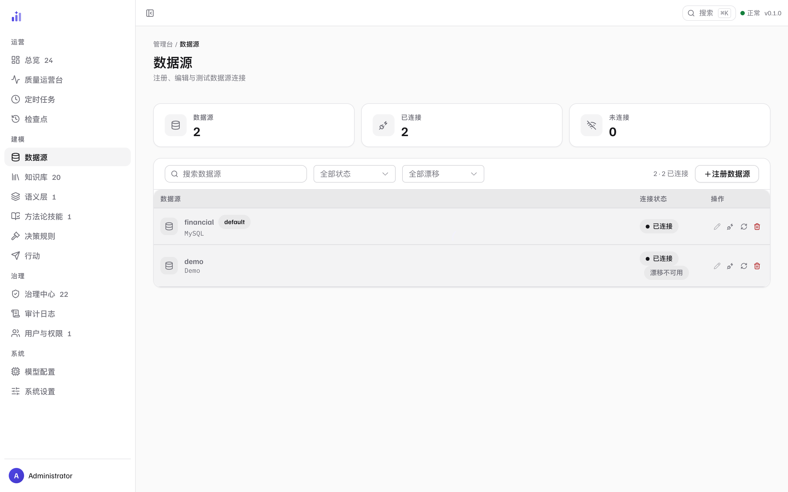
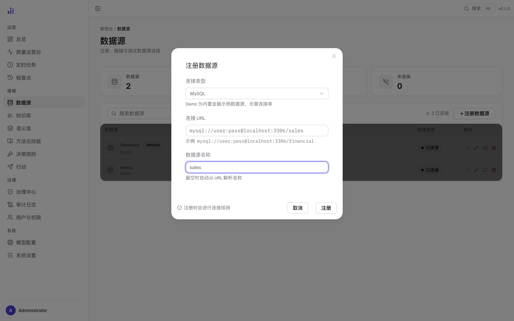

数据源接入
注册一个数据源 = 给 Trove 一个业务库 + 一套知识边界。 注册即探测（连不上会当场报原因），注册成功只是第一步—— 知识库初始化与用户授权完成后，这个源才对用户可见。
数据源列表
/admin/datasources 管全部连接的生命周期。页面上每个元素都对应一个维护动作，
先认全再动手：

1 2 3 4 5- 1三项统计——数据源总数 / 已连接 / 未连接。未连接不为 0 时先处理连接，它意味着有用户正对着一个不可用的源。
- 2注册数据源——打开注册对话框（见下一节）。
- 3
default徽标——默认数据源。用户端下拉的初始选择、未指定数据源时的兜底都指向它；首个注册的源自动成为默认，需要更换时由管理员调整服务端接入配置后重启生效。 - 4连接状态——实时的连通判定（已连接 / 未连接）。未连接通常意味着凭据变更、库下线或网络问题。
- 5操作列——编辑 / 测试连接 / 重建检索索引 / 删除。编辑按钮可被锁定（悬停看原因）：内置 Demo 不可编辑；已初始化知识库的源也不可编辑——连接一改，KB 里的表结构注释可能整片失效。
注册一个新数据源
点「注册数据源」打开对话框。四种信息：类型、连接 URL、名称（可留空）、以及一条承诺—— 注册时会真的去连一次。

1 2 3 4- 1连接类型——Demo（内置金融示例，无需连接串）/ MySQL / Doris / ClickHouse / SQLite / DuckDB / Snowflake / BigQuery。直接粘贴
scheme://开头的 URL 会自动切换类型。 - 2连接 URL——含凭据的完整连接串；下方给出当前类型的示例格式，照着改最快。
- 3数据源名称——用户端下拉里显示的名字，也是知识库目录名（
.trove/kb/<name>/）。留空会自动从 URL 解析；建议显式取一个业务可读的名字。 - 4探测承诺——点「注册」会真实连接一次：成功才登记入册；失败弹回具体原因（凭据错、库不存在、网络不通），不会留下一个「看起来注册成功」的坏连接。
-
1
选类型、填 URL
把连接串粘进 URL 框即可，类型会跟着
scheme://自动切换。注意连接串带明文凭据， 它保存在服务端的.trove/datasources.yml（不在仓库里），建议使用只读权限的库账号。 -
2
起名、注册、看探测结果
名称建议与业务对齐（
financial而不是db1）——用户端、KB 目录、 治理页都以它为准。探测失败时按报错改连接串再试，反复失败再查网络与账号权限。
注册之后：两步才上线
新注册的源不会立刻出现在用户端。要完成剩余两步（总览页「接入向导」会盯着进度）：
- 初始化知识库——在知识库运营里跑初始化（起草表注释、语义模型与确定性资产）。没有 KB 的源不提供给用户——这是「接入即建模」的硬边界。
- 授权用户——在用户与权限里给需要的人勾选这个源。只读用户与管理员以外的角色必须显式授权。
日常维护动作
| 动作 | 什么时候用 | 边界 |
|---|---|---|
| 测试连接 | 状态显示未连接、或刚改过网络/凭据，想当场验证 | 只探测，不改变任何状态 |
| 重建检索索引 | 刚批量改过 KB 资产、或检索命中异常，让索引追平最新状态 | 触发该源的索引同步（KB 资产 + 表结构）；纯后台任务，不影响正在进行的问答 |
| 编辑 | 改名称或连接串 | 内置 Demo 与已初始化 KB 的源被锁定——连接变更意味着 KB 可能失效；这类变更走「删除后重新接入」并接受 KB 需重建 |
| 删除 | 数据源确定下线 | 删除注册不删知识库——.trove/kb/<name>/ 仍在磁盘上；要一并清掉，去知识库运营的删除入口（带影响面确认） |
移除数据源会让用户端下拉立即少一项、引用它的定时任务与决策规则随之失效。 知识库删除更重——它会连同人工审批过的资产一起移除，所以放在了 KB 页面里、 要求逐条确认影响面（见知识库运营 · 删除知识库）。
相关页面
本页截图为真实界面（隔离的演示实例，数据是内置 BIRD 金融演示库；注册对话框中的连接串为示意值，未提交）；
可用前端仓库里的 npm run shots 重新生成，_manifest.json 记录每张图的来源提交。